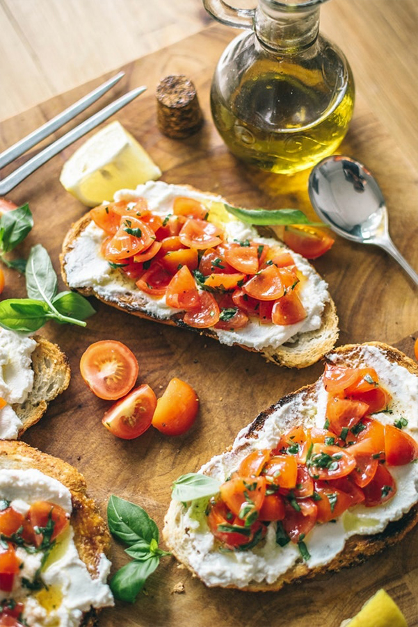

Mayo 17, 2017 | 5 comentarios
"Los mejores tacos del pais, en pocos pasos."

Mayo 17, 2017 | 5 comentarios
"Un delicioso salmón acompañado de verduras."

Mayo 17, 2017 | 5 comentarios
"De postre, un riquísimo yogur casero con cereales."

Mayo 17, 2017 | 5 comentarios
"Unas tostadas sabrosas para arrancar bien el día."